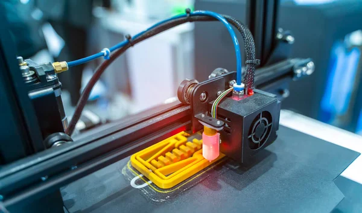

Conectando necessidades a soluções que devolvem autonomia.
A Conecta Saúde aproxima profissionais de instituições de saúde e laboratórios FabLab para tornar órteses e próteses mais acessíveis.
Começar agora
Acesse a plataforma
Entre para acompanhar pedidos e produções.
Da necessidade à entrega, passo a passo
Cada etapa é acompanhada pelos dois perfis, com informações claras e situação sempre visível.
-
01
Instituição registra
A equipe informa medidas, material, prazo e detalhes da necessidade.
-
02
Laboratório aceita
Um FabLab compatível avalia a capacidade e confirma o pedido.
-
03
Produção acompanhada
As equipes acompanham a impressão e registram atualizações.
-
04
Entrega confirmada
A peça é entregue à instituição e o ciclo é concluído com segurança.
Precisa de ajuda?
Nossa equipe está disponível para apoiar você no uso da plataforma.
Termos de Uso
Última atualização: 20 de novembro de 2026
Leia com atenção. Estes termos definem as regras de uso da Conecta Saúde por instituições de saúde e laboratórios FabLab.
1.Aceitação dos termos
Estes Termos regulam o uso da plataforma Conecta Saúde (“Plataforma”), mantida pelo Instituto Mauá de Tecnologia. Ao criar uma conta ou usar a Plataforma, você declara que leu e concorda com estes Termos e com a Política de Privacidade.
2.Sobre a plataforma
A Plataforma conecta instituições de saúde (“Instituição”) a laboratórios FabLab universitários (“Laboratório”) para a produção de órteses, próteses e peças auxiliares por impressão 3D, com acompanhamento de cada etapa do pedido.
3.Nosso papel
A Conecta Saúde é um ambiente de conexão e acompanhamento. Não fabricamos as peças, não prestamos atendimento clínico e não definimos indicação, prescrição ou uso de qualquer órtese ou prótese.
A decisão clínica e a validação do modelo são responsabilidade da Instituição. A qualidade e a conformidade da produção são responsabilidade do Laboratório. Cada parte deve cumprir a legislação e as normas sanitárias aplicáveis, inclusive as da Anvisa, quando for o caso.
4.Cadastro e conta
Para usar a Plataforma é preciso criar uma conta com nome da instituição ou laboratório, cidade, UF, e-mail, senha e perfil. Ao se cadastrar, você declara que:
- é maior de 18 anos e pode representar a organização cadastrada;
- as informações são verdadeiras e serão mantidas atualizadas;
- escolheu o perfil que corresponde à atividade real da organização.
Você é responsável pela confidencialidade da sua senha e por toda atividade realizada na sua conta. Por segurança, a sessão expira após 8 horas.
5.Regras para Instituições
Ao registrar um pedido, a Instituição se compromete a:
- informar apenas o código do paciente, nunca o nome ou outro dado que o identifique diretamente, em nenhum campo, mensagem ou arquivo;
- enviar somente arquivos .stl (até 50 MB) que tenha o direito de usar;
- fornecer medidas, material, prazo e observações técnicas corretos;
- garantir que há indicação e acompanhamento de profissional de saúde habilitado.
6.Regras para Laboratórios
Ao aceitar e produzir um pedido, o Laboratório se compromete a:
- avaliar sua capacidade e seu prazo antes de aceitar, e recusar o que não puder cumprir;
- manter a situação do pedido e as informações de suas impressoras atualizadas;
- produzir conforme o arquivo e as especificações recebidas;
- usar os dados e arquivos do pedido apenas para a produção solicitada, sem reutilizá-los ou repassá-los.
7.Conteúdo enviado
Arquivos, textos e mensagens continuam sendo seus. Você nos autoriza a armazená-los, exibi-los às partes do pedido e processá-los apenas para operar a Plataforma. Você é responsável pelo que envia e declara ter autorização para usar esse conteúdo.
8.Condutas proibidas
É proibido:
- fornecer informações falsas ou se passar por outra pessoa ou organização;
- enviar nome, documentos ou outros dados identificáveis de pacientes;
- enviar arquivos com vírus, códigos maliciosos ou conteúdo ilícito;
- tentar acessar contas ou pedidos de terceiros ou burlar a segurança da Plataforma;
- coletar dados de forma automatizada ou prejudicar o funcionamento do serviço.
9.Propriedade intelectual
A marca, o logotipo, o design, os textos e o código da Plataforma pertencem ao Instituto Mauá de Tecnologia ou a seus licenciantes. Os direitos sobre os modelos 3D enviados permanecem com quem os criou ou os detém.
10.Disponibilidade
Buscamos manter a Plataforma disponível, mas não garantimos funcionamento ininterrupto. Ela pode ficar indisponível por manutenção ou falhas técnicas, e podemos alterar ou descontinuar funcionalidades.
11.Limitação de responsabilidade
Na extensão permitida pela lei, a Conecta Saúde não se responsabiliza por decisões clínicas e pelo uso ou resultado das peças; pela qualidade ou pelo prazo da fabricação; por informações incorretas enviadas pelos usuários; por acordos feitos entre Instituição e Laboratório fora da Plataforma; nem por uso indevido da conta. Nada aqui exclui responsabilidades que a lei não permita excluir.
12.Suspensão e encerramento
Você pode pedir o encerramento da sua conta a qualquer momento. Podemos suspender ou encerrar contas que violem estes Termos ou coloquem a segurança em risco. Alguns dados podem ser mantidos após o encerramento, conforme a Política de Privacidade.
13.Alterações, lei e foro
Podemos atualizar estes Termos; a versão vigente e sua data ficam sempre disponíveis na Plataforma. Estes Termos são regidos pelas leis brasileiras e fica eleito o foro de São Caetano do Sul/SP.
Contato: conectasaude@maua.br · (11) 4239-3000.
Política de Privacidade
Última atualização: 20 de novembro de 2026
Aqui explicamos, em linguagem simples, como a Conecta Saúde trata dados pessoais, em conformidade com a Lei Geral de Proteção de Dados (LGPD – Lei nº 13.709/2018).
1.Quem somos
O Instituto Mauá de Tecnologia, por meio da Conecta Saúde, é o controlador dos dados pessoais tratados na Plataforma, ou seja, quem decide como e para que eles são usados.
2.Dados que coletamos
- Conta: nome da instituição ou laboratório, e-mail, cidade, UF, perfil e senha (guardada apenas como hash, nunca em texto aberto);
- Pedidos: código do paciente, tipo de peça, material, medidas e observações técnicas, prazo, urgência, quantidade, arquivo .stl, situação e validação clínica;
- Mensagens: texto da conversa de cada pedido, com data, hora e remetente;
- Laboratórios: dados das impressoras (marca, modelo, tecnologia, disponibilidade, volume e materiais);
- Dados técnicos: datas de criação e alteração dos registros e informações de sessão para mantê-lo conectado.
3.Dados de pacientes
Pedidos de órteses e próteses se relacionam a informações de saúde, que a LGPD considera dados sensíveis. Por isso, o paciente é identificado apenas por um código interno da Instituição (ex.: “PAC-4821”). É proibido informar nome, CPF, contato ou outro dado que identifique o paciente, inclusive na conversa e nos arquivos.
A correspondência entre o código e o paciente fica apenas nos sistemas da Instituição, que é responsável por ter base legal e, quando aplicável, o consentimento do paciente ou de seu responsável.
4.Para que usamos os dados
- criar e gerenciar sua conta e autenticar o acesso (execução de contrato);
- registrar, encaminhar, acompanhar e concluir pedidos entre Instituições e Laboratórios (execução de contrato);
- tratar o código do paciente e as informações técnicas necessárias à produção da peça (tutela da saúde, art. 11, II, “f”, e consentimento quando aplicável);
- manter a segurança e prevenir fraudes (legítimo interesse e prevenção à fraude);
- cumprir obrigações legais e regulatórias;
- oferecer suporte e melhorar a Plataforma, preferencialmente com dados anonimizados (legítimo interesse).
Não usamos seus dados para publicidade e não vendemos dados pessoais.
5.Com quem compartilhamos
- Entre Instituição e Laboratório: os dados de um pedido são visíveis à Instituição que o criou e ao Laboratório responsável;
- Pedidos sem laboratório definido: até que um Laboratório aceite, o pedido pode ser visto pelos Laboratórios cadastrados, para avaliação;
- Lista de laboratórios: usuários logados veem nome, localização e impressoras dos Laboratórios;
- Prestadores de infraestrutura (hospedagem e banco de dados), que tratam os dados conforme nossas instruções;
- Autoridades, quando exigido por lei ou ordem judicial.
6.Serviços de terceiros
As páginas carregam fontes do Google Fonts, e por isso o navegador se comunica com servidores do Google, que podem receber o endereço IP e dados do navegador. Se a hospedagem estiver fora do Brasil, a transferência internacional seguirá as garantias da LGPD.
7.Segurança
- senhas armazenadas com hash criptográfico (bcrypt);
- autenticação por token com validade de 8 horas;
- acesso por perfil: cada usuário vê apenas os pedidos em que atua;
- arquivos limitados a .stl de até 50 MB.
Nenhum sistema é totalmente imune a incidentes. Se houver incidente com risco relevante, comunicaremos os titulares e a ANPD. Use uma senha forte e saia da conta em computadores compartilhados.
8.Retenção
Guardamos os dados enquanto sua conta estiver ativa e, depois, pelos prazos exigidos por lei ou regulamento sanitário ou para o exercício regular de direitos. Depois disso, eles são eliminados ou anonimizados, ressalvadas as hipóteses do art. 16 da LGPD.
9.Armazenamento no navegador
Não usamos cookies de publicidade ou rastreamento. Para mantê-lo conectado, o token de acesso e os dados básicos da sessão ficam no armazenamento local do navegador (localStorage) e são removidos quando você clica em “Sair”.
10.Seus direitos
Conforme o art. 18 da LGPD, você pode solicitar:
- confirmação do tratamento e acesso aos dados;
- correção de dados incompletos, inexatos ou desatualizados;
- anonimização, bloqueio ou eliminação de dados desnecessários ou tratados em desconformidade;
- portabilidade dos dados;
- eliminação dos dados tratados com consentimento e revogação do consentimento;
- informação sobre com quem compartilhamos seus dados;
- revisão de decisões tomadas apenas por tratamento automatizado.
Você também pode reclamar à ANPD (gov.br/anpd).
11.Crianças e adolescentes
A Plataforma é destinada a profissionais e organizações, não a menores de 18 anos. Pedidos podem se referir a pacientes menores de idade, caso em que valem as proteções do art. 14 da LGPD e a Instituição deve obter o consentimento do responsável legal quando exigido.
12.Alterações e contato
Podemos atualizar esta Política; a versão vigente e sua data ficam sempre disponíveis na Plataforma. Para exercer seus direitos ou tirar dúvidas, fale com o encarregado de dados.
Contato: conectasaude@maua.br · (11) 4239-3000.